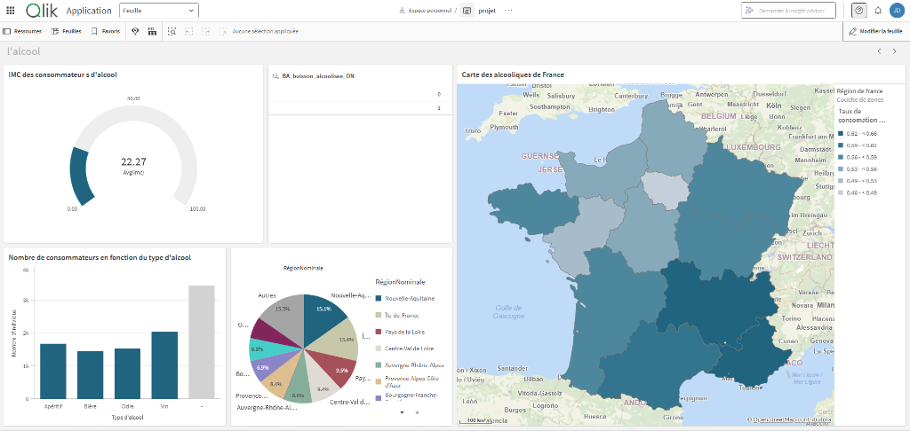

Projet : Réaliser un tableau de bord interactif
Ce projet a été réalisé en binôme en novembre 2025. L'objectif était de créer un tableau de bord interactif à l'aide de QlikSense permettant de visualiser et d'analyser des données complexes de manière intuitive, sur le thème de l'influence de l'alcool dans les habitudes de vie des Français.
Aperçu du tableau de bord

Objectifs du projet
Nous devions concevoir et mettre en place des graphiques et indicateurs pertinents pour représenter au mieux les données. L'objectif principal était de rendre l'analyse de cette problématique claire et accessible à tous à travers des visualisations de données adaptées.
Réalisation et Organisation
Pour mener à bien ce travail, nous avons procédé par étapes :
- Développement et mise au point des scripts de chargement des données (ETL).
- Sélection et conception des visualisations les plus adaptées pour représenter les données de manière claire et engageante.
- Collaboration continue au sein du binôme afin d'échanger nos idées et d'affiner la présentation des indicateurs.
Difficultés rencontrées
L'une des principales difficultés a été de s'assurer que les données étaient correctement intégrées et que les visualisations restaient à la fois informatives et esthétiques. De plus, la prise en main de certaines fonctionnalités avancées de QlikSense a requis un temps d'adaptation. Nous avons surmonté ces défis grâce à une communication fluide et une répartition efficace des tâches.
Conclusion & Compétences acquises
Ce projet m'a permis de développer mes compétences en visualisation de données avec QlikSense ainsi que mes capacités à travailler en équipe. J'ai renforcé ma compréhension des meilleures pratiques en matière de conception de tableaux de bord interactifs et de design de visualisations.